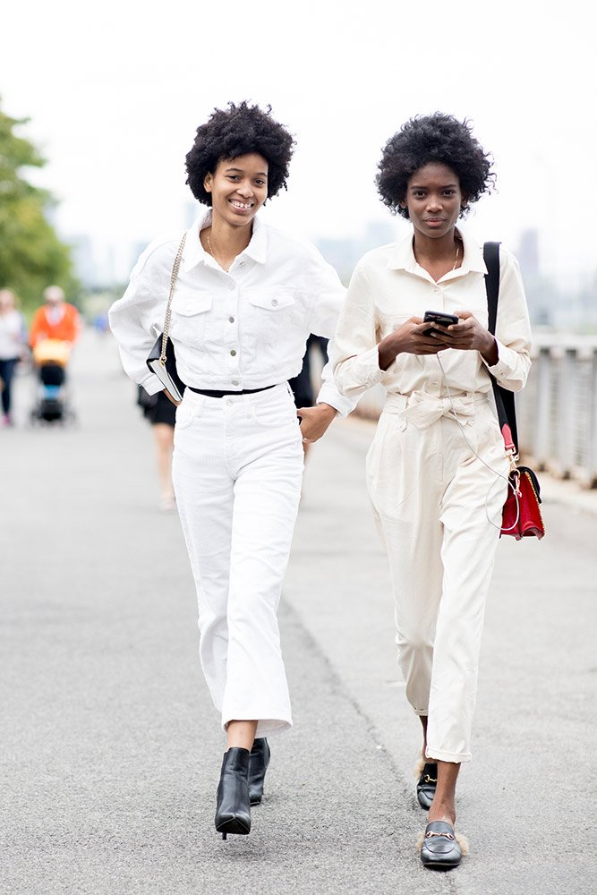
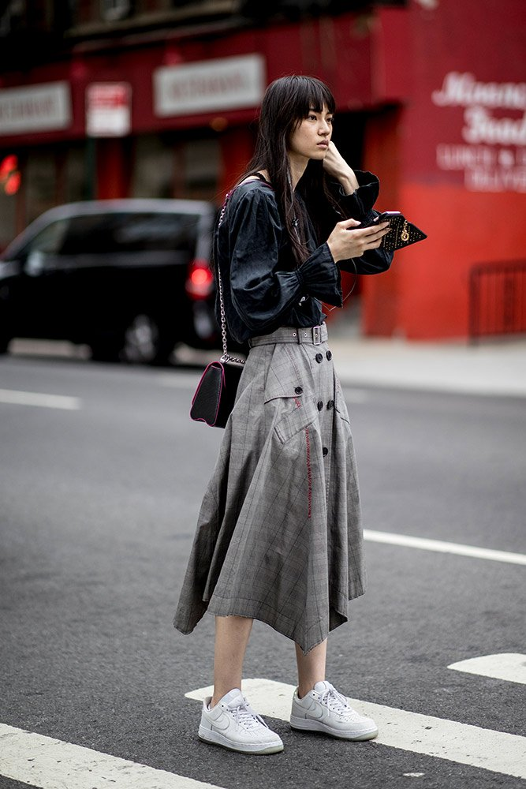
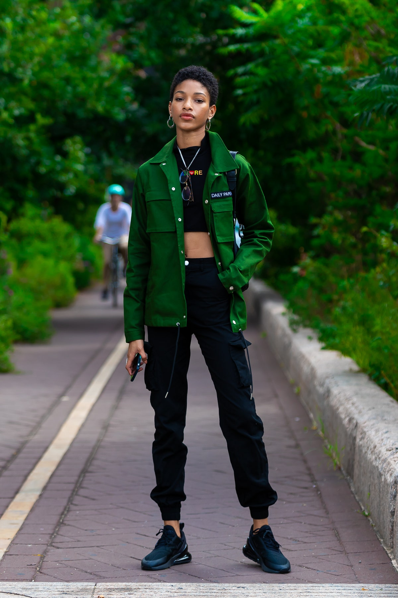
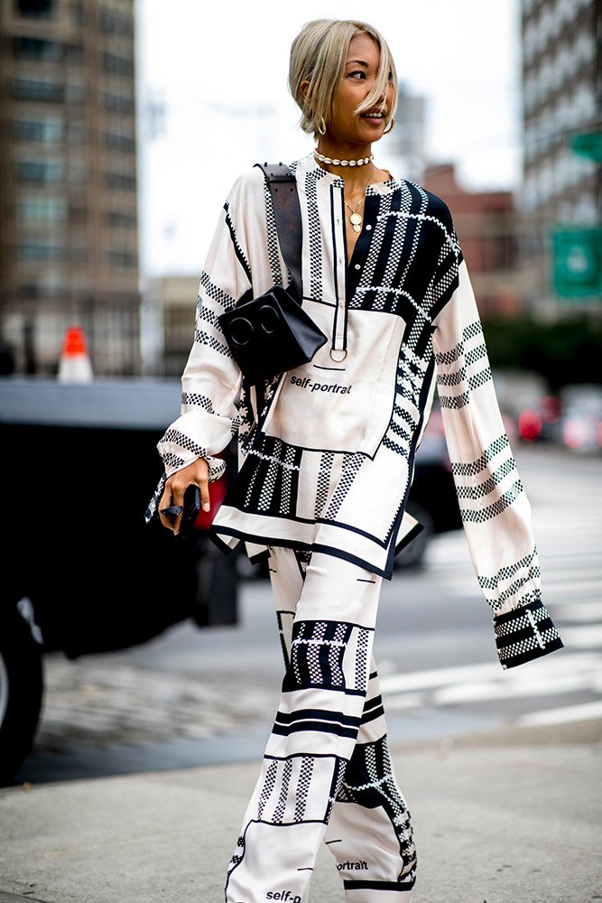
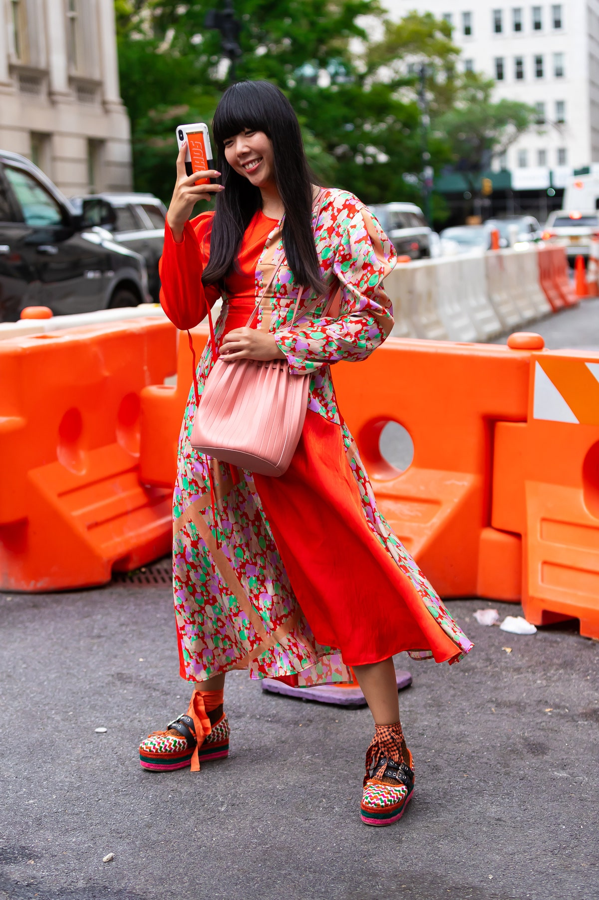
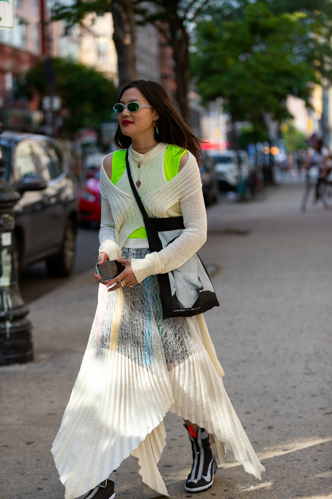
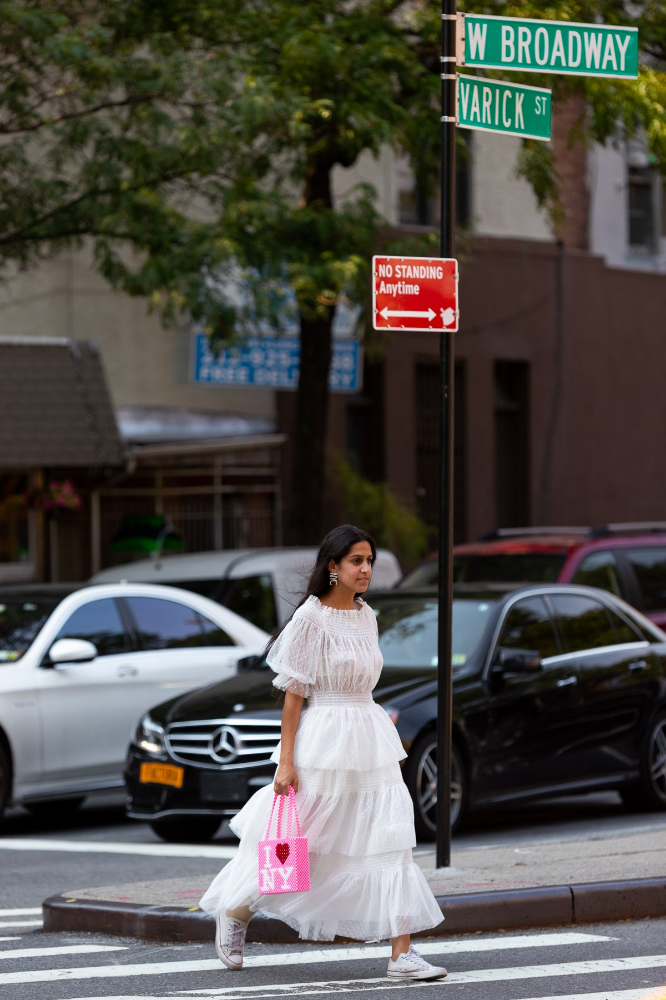
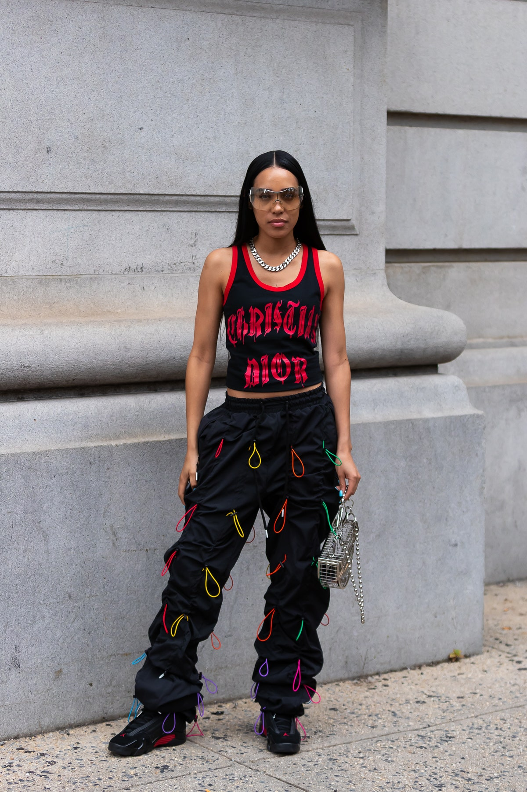

Monochrome outfits have become increasingly popular in 2020.

Midi skirts can be edgy too!

Utility-inspired fashion is making a comeback.

Matching sets have gained popularity quickly.

Color coordination between outfits to shoes to accessories are always a statement.

Layering is an essential skill in New York.

Stand out in a dreamy dress with a pop of color.

Everyday street style, but make it high fashion.